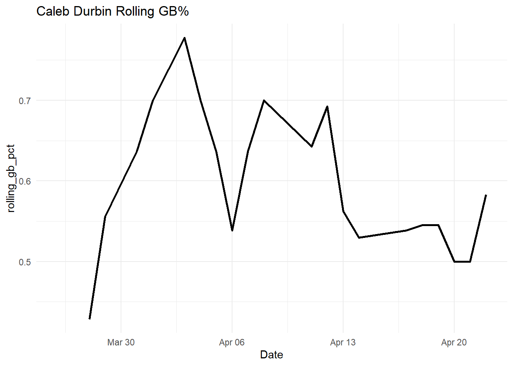
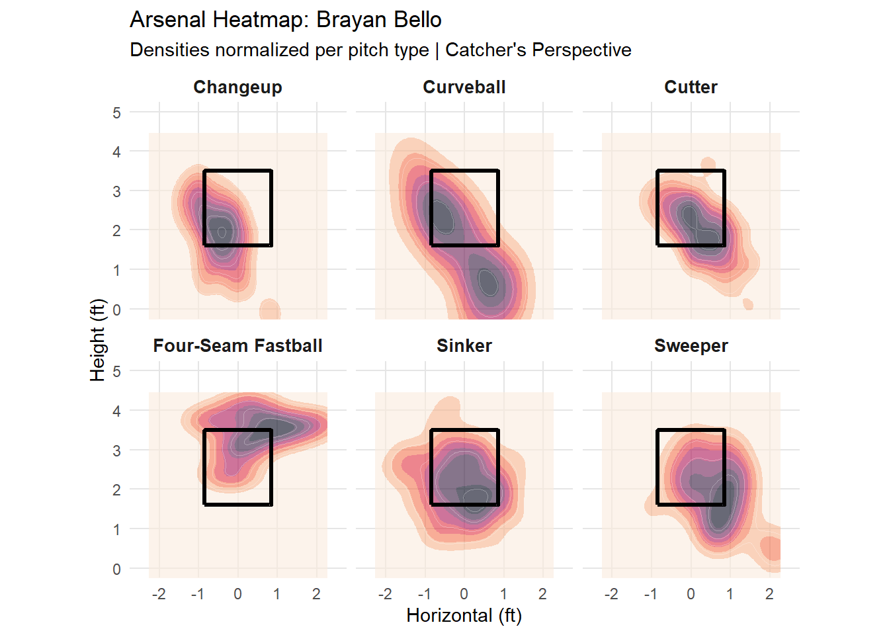

| Rank | Team | Barrel% |
|---|---|---|
| 1 | Los Angeles Dodgers | 8% |
| 2 | Detroit Tigers | 7% |
| 3 | Los Angeles Angels | 7% |
| 4 | New York Yankees | 7% |
| 5 | Atlanta Braves | 6% |
Series Rundown: Tigers @ Red Sox
The Tigers are T-2nd in barrel rate as a team this year, trailing only the Trolley-Dodgers at 7%. When we look at HR/FB%(the rate at which fly-balls are converted to HRs), the Dodgers hold a mark of 24%, which is almost double the league average. Compare this to the Tigers, who sit at 8%, T-2nd lowest in MLB. The lack of home runs for the Tigers thus far isn’t due to a lack of power; the long baseball season will treat the Tigers’ bats kindly. Taking into account the contact quality on balls put in play, the Tigers have the 3rd lowest SLG% compared to their xSLG%.
The Red Sox, on the other hand, need to make changes to their approach if they want the ball to clear the fence. The Sox trail only the Brewers in GB% as a team(47%) and have the T-2nd fewest pulled fly-balls as well. Teams that hit for power avoid putting the ball on the ground and aim for lifting the ball to the pull side. When accounting for exit velocity and hit trajectory/direction, the most valuable type of contact in terms of SLG is a pulled, hard-hit ball in the air. This seems simple enough, because it is the most likely contact type to result in a home run. No man on the Red Sox has suffered ground-ball woes as much as Caleb Durbin. Of qualified players, he has the 7th highest GB% in MLB with 61%. He started the year with 18 straight ABs without a hit, tied for the second-longest streak to open 2026 behind Josh Naylor and tied with an old friend of the Sox, Rob Refsnyder. But he seems to be trending in a better direction. Over the past 7 games, his GB% is down to 50%, and his batting average is rising alongside it.
| Rank | Team | GB% |
|---|---|---|
| 1 | Milwaukee Brewers | 52% |
| 2 | Boston Red Sox | 47% |
| 3 | Athletics | 46% |
| 4 | Pittsburgh Pirates | 46% |
| 5 | San Francisco Giants | 46% |
| Rank | Player | GB% |
|---|---|---|
| 1 | Brandon Lockridge | 73% |
| 2 | Christian Yelich | 73% |
| 3 | Justin Crawford | 67% |
| 4 | Denzel Clarke | 66% |
| 5 | Joey Loperfido | 63% |
| 6 | Joey Ortiz | 63% |
| 7 | Yainer Diaz | 62% |
| 8 | Alex Freeland | 61% |
| 9 | Caleb Durbin | 61% |
| 10 | Luisangel Acuña | 60% |

Game 1:
Ranger Suarez took the ball for the series opener for Boston and delivered his best start in a Red Sox uniform, albeit there was no Red in the uniform that day. Ranger’s debut in the ‘Fenway Greens’ began with an out, and then back-to-back base hits given up to Kevin McGonigle and Jahmai Jones. This was Jahmai Jones’ third start this season, sporting a 0.077 BA. But even with that horrid average to start, AJ Hinch was confident in Jones batting in the 3rd spot. He was rewarded early, getting a double in his first at-bat; however, upon further review, he was deemed out at second on a throw from CF Ceddanne Rafaela. The play ended up only being a single and an out on the advancement. Jahmai Jones went on to have a great series in totality, collecting 4 hits on 1 strikeout with a homer and a double. His contact metrics support Hinch’s decision to bat him high in the order. When he puts the ball in play, he is just above a league-average producer. If he can limit strikeouts, he can wiggle his way into a larger role in this Tiger lineup.
The only extra base hits of the night for the Red Sox came from the 8 and 9 hole hitters: Connor Wong and Caleb Durbin. Wong started the year hot; by April 12th, he held the highest batting average on the Red Sox at .375. But since he has been batting .250, his GB% nearly doubled between those timeframes.
Ultimately, Ranger Suarez threw 8 scoreless with 0 ERs on 4 Ks; the second game of 8IP, 0 ERs, and <5 Ks in MLB this season( J. Wrobleski, 4-13-2026); a sinker-baller’s gem. Suarez induced contact on 21 of 25 at-bats, and 48% of those resulted in a ground-ball. Suarez beautifully mixed his pitches, only going to the sinker 28% of the time. Mize was also able to keep the Red Sox lineup in check, twirling 6 and ⅔ scoreless innings.
Which takes us to the bottom of the 10th, still scoreless after Garrett Whitlock was able to send the Tigers down in order. With Jarren Duran on 2nd, Ceddanne Rafaela was the first man up for the Red Sox. Will Vest stayed in after the ninth to get a righty-on-righty matchup. Against righties, Rafaela only struckout 17% of the time, but was unable to generate contact on Vest after Duran advanced on a WP; the game stayed knotted up. Bringing us to the ninth man in the lineup, Caleb Durbin, after a Marcelo Mayer four-pitch walk. Durbin already had a double in the night, but Cora opted to call on Masataka Yoshida with the righty on the mound. Here is when Vest should have been pulled. Against righties, Yoshida has the highest walk rate in MLB at 33% to go along with a 50% hard hit rate. He has seen the ball well out of the right hand. Regardless, Hinch wanted Vest v. Yoshida, and so did Cora. Yoshida delivered on a 2-1 pitch, bouncing a ball over Torkelson to send the first runner across home plate of the night. Yoshida was not able to keep the brightest smile in Boston hidden as he was mobbed on the infield, starting Patriots’ Day weekend off with a bang.

Game 2:
As the hangover from the previous night hung in the air for the Red Sox, the Tigers were ready to pounce. In the top of the first Brayan Bello found himself in a jam; bases loaded with Spencer Torkelson at the dish. On a 2-2 cutter, Bello was able to get a wave and a miss to get his second out of the inning. The put-away pitch was his cutter, which seems to have replaced his slider in usage. The cutter has arguably been his best pitch in what is a shaky year from Bello. The pitch induces a groundball on ⅔ of balls put in play and has been hit hard at only a 25% rate. Now with 2 outs, Bello gets the lefty Kerry Carpenter. On a 3-2 sinker, Bello misses the zone entirely, walking in the Tigers’ first run of the afternoon. This gave the Tigers a first-inning lead that they would never relinquish. This missed sinker exemplifies two of Bello’s issues that have led to his swollen 6.75 ERA. First, all of his pitches have seen a drop in velocity; this particular sinker was a MPH down from last year’s average. Second, the pitch’s missed location is consistent with his command throughout the year. Bello throws a fastball in the zone 49% of the time, which is the second-lowest mark in Boston(only above G. Crochet). When a fastball loses its location and velocity, all hell can break loose for a pitcher, especially one who relies on weak contact rather than swing-and-miss.

Before the Red Sox were able to get even one baserunner, Bello found himself in another pinch; this time in the 4th, after already giving up a home run to Kerry Carpenter in the inning. A walk to Wenceel Perez and a double from Javier Baez stuck Bello with two runners in scoring position and 1 out. Bello has conceded a batting average of .526 this season with runners in scoring position, but was able to limit Jake Rogers to a soft flyball to center. This resulted in a run-scoring sac-fly, which was followed by a Kevin McGonigle RBI single.
This is the first matchup between the Tigers and Red Sox featuring the two young phenoms, Kevin McGonigle and Roman Anthony. McGonigle collected 5 hits(most in the series) in his 14 at-bats, while Anthony was much quieter, sporting an average of .167. However, Anthony’s lack of noise in the series was not all due to a lack of ability. Only 35% of pitches he saw were in the zone, leading to him taking 5 walks in the series, which were the most in MLB this weekend. On the other hand, Trevor Story also set a league high mark this weekend, striking out 9 times in 17 plate appearances; 3 of which came in game 2. Story’s struggles at the plate are highlighted by his whiff rate, the percentage of swings that result in a swing and miss. For the weekend, his whiff% was 49%; almost half of his swings generated no contact. He paired with Willson Contreras to have the two highest totals of whiffs on the weekend in MLB(17 and 13). Story doesn’t have as much of an issue with missing pitches in the zone, but he really does with taking swings at pitches outside of the zone. His chase rate on breaking pitches is also 49%, which is the highest on the Red Sox.
In the fifth, the Red Sox got their only run of the day, somehow still in letdown fashion. After leadoff hits from Abreu and Rafaela, Caleb Durbin drew a walk to load the bases for Connor Wong. Wong grounded into a double play to score Abreu before the inning ended with an IKF fly-out. The rest of the day was uneventful for the Sox, losing 4-1 via a save from Kenley Jansen.
Game 3
Sunday afternoon featured the Red Sox ace, Garrett Crochet, vs. the Tigers’ big FA signing, Framber Valdez. Crochet is coming off the worst start of his career(1 ⅔ IP, 10 ER v. Minnesota) and needs to sharpen up quickly to bring his ERA down to Earth. If he goes 195 innings in his final 38 games while allowing a sub-2.5 ERA, he will be able to finish the season with a sub-3 ERA. This has only been accomplished by 10 pitchers since 2011; most recently by Sandy Alcantara in 2022.
Framber Valdez has been pitching differently in the first month with his new team. In 2025, Framber led all of MLB in strikeouts and pitch usage% on the Curve. Now he only generates a whiff on 27% of his curveballs, and his K% is well below his career average(15% opposed to 23%). While his curveball effectiveness and usage have dropped, his ERA is sitting nicely at 3.30. He has taken exception to allowing hard-hit balls; he holds the lowest hard-hit rate of any Tiger starter this year, and he also has not allowed a barrelled ball. He also keeps the ball on the ground 52% of the time, consistently not letting batters have a chance to lift a ball. For a Red Sox lineup with issues hitting for power, runs may come at a premium against Valdez.
And oh they did.
Valdez tossed 6 innings of one-run baseball, the blip coming from a blast off the bat of Willson Contreras. Even with this homer, Contreras had an OPS of .551 on the weekend, offering swings at 44% of pitches outside of the zone. The difference in his splits this year has been colossal; against LHP, he strikes out in 6% of PA and 34% of the time against RHP. He has the third most whiffs against RHP in MLB. Yet his OPS is still almost .800 against righties, finding hard contact 47% of the time he puts the ball in play. Once he can limit swings taken on bad pitches, he should balance out his splits and be the biggest bat for the Red Sox. This home run was also the only one for the Red Sox in the series.
Garrett Crochet continued to struggle, yet flashed his status quo stuff just enough to accumulate eight strikeouts. But before he recorded eight strikeouts, he allowed five runs in five innings. Throwing strikes has been a big issue thus far for Crochet; his percentage of strikes thrown in the zone(zone%) is just 44%, the second lowest on the Sox behind Ryan Watson(41%). His lack of control on all pitches, but especially his fastball mix, allows hitters to get comfortable in the box. This affects all of his other pitches since batters can sit on a good pitch in the zone, leaving hitters free of the temptation to give an offering at a sweeper dropping out of the zone. In comparison, his fastballs found the zone almost 60% of the time, allowing him to be selective with his offspeed location. He also seems to be experimenting with his pitch mix, offering more sinkers instead of four-seamers. His four-seam usage this year is a career low 28%, and his sinker usage increased by 9% from last season. While his cutter and four-seamer have been put in the air consistently this year, the sinker is hit on the ground often. Most of the damage coming against Crochet this year is from fastballs. Paired with the low 27% whiff rate on his sweeper, Crochet has had all sorts of struggles. Crochet will need to regain control of his fastballs if he returns to a Cy Young-level arm.
During the afternoon, Crochet wasn’t able to improve his fastball command, missing the zone more often than not. His breaking pitches also didn’t induce swing and miss, while the ball was frequently put in the air; all problems that seem to be continuous trends.
Game 4
Patriots’ Day was a Sonny day, but was slammed to a halt in the 3rd inning when Sonny Gray exited with a hamstring injury. Gray was gliding through the Tigers’ lineup, starting with six straight outs, when he ran into trouble in the bottom of the lineup. Two hits from right-handed batters Matt Vierling and Jake Rogers scored the first Tiger run; Gray’s allowed OPS v. RHB is about 400 points higher than against LHB. In the same inning, Sonny Gray was replaced by Danny Coulombe. Coulombe allowed two balls in play, which resulted in two weak groundouts. His season hard hit rate is the second lowest on the team at 25%, behind Jovani Moran’s 22%. His strikeout rate is also the lowest on the club at 10%.
In the bottom of the second, the Red Sox had action on the basepaths while facing Jack Flaherty. Three walks in the inning resulted in two runs for the Red Sox, while they also recorded only one hit. Jarren Duran led the inning off with a strikeout and went 0-3 on the day before being pinch-hit for by Isiah Kiner-Falefa. Duran had an average of .167 for the series, going the whole series without a hard-hit ball; 4 of 5 balls in play were also on the ground. Duran’s whiff% was 46% heading into the series, trailing only Willson Contreras. A mid-season turnaround for Duran won’t come until he can see the ball; his chase rate this season is 7% higher than that of 2024.
In the seventh inning, the Sox had the bases loaded with Marcelo Mayer set to face Tyler Holton. This was only going to be Mayer’s sixth at-bat v. a LHP in 2026, as Alex Cora still protects him. Unsurprisingly, Cora called in Ceddannne Rafaela from the bench to face the lefty with a righty of his own. Rafaela had the second-highest BA(.368) against LHP on the Sox, only behind Narvaez’s .500 mark. Down to two strikes, Rafaela was able to poke a fairball down the first base line to score two, giving the Sox a 5-3 lead. Rafaela was able to advance to second when Caleb Durbin was thrown out at home and advanced to third on a wild pitch. The other lefty-killer, Carlos Narvaez, delivered in the next at-bat, driving in Rafaela for a 6-3 lead.
The Sox took a commanding 8-3 lead into the ninth with Ryan Watson on the rubber. But he sputtered, allowing a run to score before being replaced by Aroldis Chapman with runners on 1st and 3rd. Chapman allowed a two-run double from Riley Greene before closing the door. He recorded one strikeout, leaving him behind only 1 behind Goose Gossage for second in career strikeouts as a reliever.